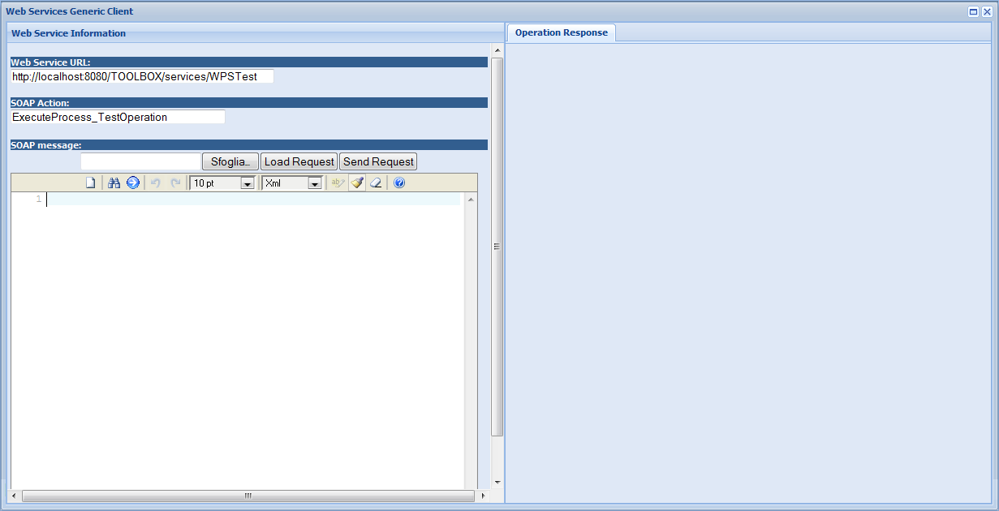

Open the Toolbox application client and select . A generic web service client should be open

The following inputs are required:
- Web Service URL: URL of the remote Web Service
- SOAP Action: SOAP Action of the operation to be invoked on the remote Web Service
- SOAP message: complete SOAP message to be sent to the remote Web Service
Enter the required inputs then click on Send Request. The message is sent and the response is displayed in Operation Response tab page for investigation.
 See the Push Server page to know how to use the
push server to test asynchronous operations.
See the Push Server page to know how to use the
push server to test asynchronous operations.